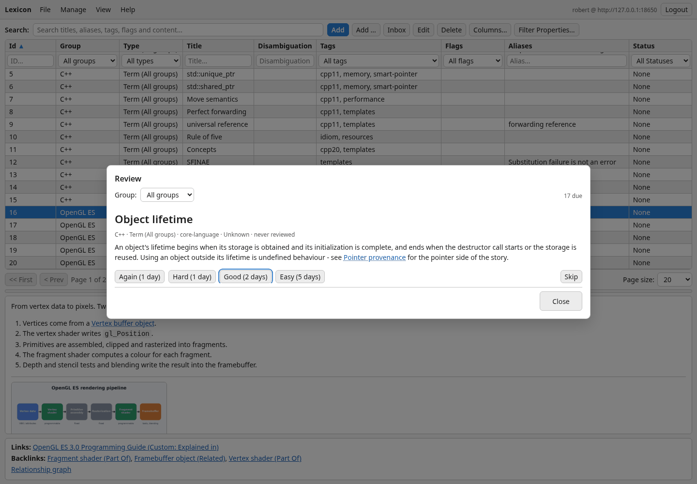

Review
Writing something down is the easy half. Review takes the items you already have and brings each one back just before you would have forgotten it — one card at a time, with a rating that decides when you see it again. Cards ask narrower questions about an item, in a quiz of their own.
Start a review
| Client | How to open it |
|---|---|
| Desktop | View → Review... (Ctrl+R) |
| Web client | View → Review... |
| Android | Review in the navigation drawer |
The Group box at the top limits the sitting to one group — useful when you have half an hour and want it all to go into C++.

One card at a time
- The title comes first, with its disambiguation, group, type, understanding level and when you last saw it. Try to recall the content before you read on.
- Show answer renders the item's Markdown content.
- Rate how it went. The rating moves the understanding level and sets the next review.
- Skip leaves an item for later without changing anything; Close ends the sitting. Nothing is lost — the queue is rebuilt from the items themselves every time.
The four ratings
| Rating | Key | Understanding | Next review for an Understood item |
|---|---|---|---|
Again | 1 | one level down | 2 days, and once more in this sitting |
Hard | 2 | unchanged | 5 days |
Good | 3 | one level up | 12 days |
Easy | 4 | two levels up | 30 days |
The interval follows the understanding level the item ends up with: 1, 2, 5, 12 or 30 days for Unknown, Recognized, Understood, Practiced and Mastered. So the levels you already track double as the schedule — there is no second, hidden set of numbers.
What is due
- An item is due when its last review is further back than the interval for its level.
- Items you have never reviewed are due at once, and come after the overdue ones — old business first.
- The review reads and writes the same items as everything else, so a rating on the phone shows up on the desktop, and the other way around.


Ten minutes beats an hour A short daily sitting keeps the queue short. If it has grown anyway, pick one group and work through that — the rest waits patiently.
Rate honestly Easy on an item you half-remembered pushes it a month away. Again costs you nothing but two days.
Cards and the card quiz
Review asks you about a whole item. A card asks one precise question about it — What does pointer provenance describe? — with its answer, in plain text over as many lines as you like. An item can have any number of cards; they go when the item goes.
| Client | An item's cards | The quiz |
|---|---|---|
| Desktop | Cards... in the item table's context menu, Manage → Cards of selected item... (Ctrl+K), or the item editor's Cards... | View → Card quiz... (Ctrl+Shift+K); Quiz cards in the relationship graph |
| Web client | Manage → Cards of selected item..., the preview's Cards link, or the item editor's Cards... | View → Card quiz..., the preview's Card quiz; Quiz cards in the graph |
| Android | Cards on the item page | Card quiz on the item page; Quiz cards in the graph |
The card list shows each question and answer with how often you knew it (Success), how often not (Failure) and your Last attempt. Add, Edit and Delete change the question and the answer; the three statistics are only ever moved by the quiz. Each change is saved at once, so an item has to be saved before it can have cards.
- The question comes first, with the item it belongs to and how far you are (
3 / 17). - Show answer (
Space) shows it. Looking records nothing. - Do you know? Yes (
Y) or No (N) counts on the card and moves on. At the end you see how many cards there were and how many you knew.
A quiz covers This item, or its Neighborhood one, two or three links away — exactly the items the relationship graph draws at that depth, each card once. Items without cards simply add none.
Two different things A card answer never changes the item's understanding or when it is due for review, and a review never changes a card. There is no card schedule: a quiz asks every card in scope, whenever you start one.